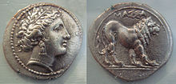

France, in Western Europe, encompasses medieval cities, alpine villages and Mediterranean beaches. Paris, its capital, is famed for its fashion houses, classical art museums including the Louvre and monuments like the Eiffel Tower. The country is also renowned for its wines and sophisticated cuisine. Lascaux’s ancient cave drawings, Lyon’s Roman theater and the vast Palace of Versailles attest to its rich history.The City of Light draws millions of visitors every year with its unforgettable ambiance. Of course, the divine cuisine and vast art collections deserve some of the credit as well. The gentle River Seine rambles through the city, flanked by stately museums, centuries-old churches, and blocks of Rococo- and Neoclassic-design architecture, further enhanced by cascading trees and glowing streetlamps. Peppering the Seine's cobbled walks and graceful bridges are impossibly chic Parisians, probably on their way to the market, cafe or cinema.Containing world-class museums, fashion, cuisine and an atmosphere all its own, Paris is also a city of "many splendors," as Ernest Hemingway recalled in his memoir, "A Moveable Feast." Visit the beloved Musée d'Orsay, shop the biggest designers on the Champs Élysées or hit the boutiques in Le Marais, take in the view atop the Eiffel Tower, or even plan a day trip to Versailles Palace. But don't miss out on the simple pleasure of meandering the marvelous arrondissements (districts), or snacking on street crepes either.
Metropolitan France was settled during the Iron Age by Celtic tribes known as Gauls before Rome annexed the area in 51 BC, leading to a distinct Gallo-Roman culture. In the Early Middle Ages, the Germanic Franks formed the Kingdom of Francia, which became the heartland of the Carolingian Empire.The first written records for the history of France appeared in the Iron Age. What is now France made up the bulk of the region known to the Romans as Gaul. Greek writers noted the presence of three main ethno-linguistic groups in the area: the Gauls, Aquitani and Belgae. The Gauls, the largest group, were Celtic people speaking Gaulish. Over the first millennium BC the Greeks, Romans and Carthaginians established colonies on the Mediterranean coast and offshore islands. The Roman Republic annexed southern Gaul in the late 2nd century BC, and legions under Julius Caesar conquered the rest of Gaul in the Gallic Wars of 58–51 BC. A Gallo-Roman culture emerged and Gaul was increasingly integrated into the Roman Empire.
Greek colonies
In 600 BC, Ionian Greeks from Phocaea founded the colony of Massalia (present-day Marseille) on the shores of the Mediterranean Sea, making it one of the oldest cities in France. At the same time, some Celtic tribes arrived in the eastern parts (Germania superior) of the current territory of France, but this occupation spread in the rest of France only between the 5th and 3rd century BC.
